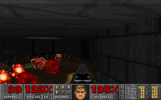

Gewalt in Computerspielen Supporting tagline
Bezug zum Film
Verrohung der Gesellschaft Exzessive Gewaltdarstellung im Fernsehen Publikum jubelt „Gamern“ zu
Definition Gewalt
Um eine erste Übersicht zu bekommen was überhaupt Gewalt ist sind nachfolgend zwei Definitionen aufgeführt:
§ 131 StGB (Gewaltdarstellung):
Wer Schriften (§ 11 Abs. 3), die grausame oder sonst unmenschliche Gewalttätigkeiten gegen Menschen oder menschenähnliche Wesen in einer Art schildern, die eine Verherrlichung oder Verharmlosung solcher Gewalttätigkeiten ausdrückt oder die das Grausame oder Unmenschliche des Vorgangs in einer die Menschenwürde verletzenden Weise darstellt,…wird mit Freiheitsstrafe bis zu einem Jahr oder mit Geldstrafe bestraft.
Definition nach Brockhaus:
„Gewalt, die Anwendung von physischem oder psychischem Zwang gegenüber Menschen. Gewalt umfasst 1) die rohe, gegen Sitte und Recht verstoßende Einwirkung auf Personen (lateinisch violentia), 2) das Durchsetzungsvermögen in Macht- und Herrschaftsbeziehungen (lateinisch potestas) […]“
Gewaltdarstellung in Videospielen
Ein zentrales mittel vieler Computerspiele basieret auf dem kompetativen Wettstreit. Also dem gegenseitigen messen wer besser ist. Als eines der ersten Videospiele, welches nach deutschem Recht indexiert wurde gilt die 1984 erschienene Panzersimulation „Battle Zone“. Die Darstellung von Gewalt war in diesen frühen Anfängen noch sehr limitiert. Doch die Angst vor einer militärischen Auseinandersetzung der beiden Supermächte war mitte der Achtziger noch sehr aktuell. 
Knapp zehn Jahre später hat sich mit der ersten Version von Doom die Grafik deutlich weiterentwickelt. Aufgrund der für die damalige Zeit realistischen Darstellung, hat sich die BPjM 1993 für eine Aufnahme in die Liste der jugendgefährdenen Medien entschieden. 
1993 „Doom“ erster Ego-Shoter in 3D Grafik - bis 2011 indiziert 2004 „Doom 3“ deutlich realistische Darstellung - nicht indiziert 2011 „Battlefield 3“
Erklärungsansätze
Die Katharsistheorie Die Inhibitionstheorie Die Theorie der kognitiven Unterstützung Die Stimulationstheorie Die Habitualisierungstheorie
Studien
BPjM
Sind Menschen, menschenähnliche Wesen oder aber andere Geschöpfe Opfer der virtuellen Gewalt? Was ist die Motivation, (ethische) Begründung bzw. Legitimation der virtuellen Gewalt? Wird das Computerspiel insgesamt durch Mord- und Metzelszenen geprägt? Ist die Darstellung der Gewalt im Computerspiel selbstzweckhaft und detailliert? In wieweit wird die Distanzierung vom virtuellen Spielgeschehen vermindert oder gefördert? Spieler wird die Wahl gelassen ob er Gewalt anwendet oder nicht. Wichtiges Unterscheidungsmerkmal zum Film ist die direkte Beteiligung
Einene Link
Archive
Atom Feed
Categories
Gewalt in Computerspielen
Hello World!
Gewalt in Computerspielen
Index
Pseudonym vs. Anonym
Was ist Real?
Pages bal blu
Sitemap
Tags
- Einleitung
- IMDB Auszug
- Fragestellungen
- Thema 1
- Thema 2
- Thema 3
- Quellen
Dies ist ein Fucking Zitat